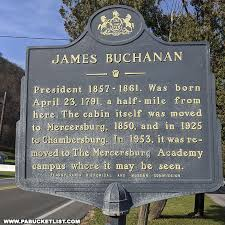
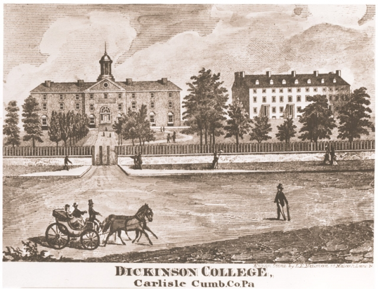

Before he Became President

Early Life
James Buchanan was born on April 23, 1791, in Cove Gap, Pennsylvania. His father was James Buchanan Sr, a merchant who immigrated from Ireland. His mother was Elizabeth Speer Buchanan. He lived an average higher-end life and went to Dickinson College and studied law. He finished law school and is admitted to the bar in 1812. He opened a practice in Lancaster, Pennsylvania and did that until he started his political career.

Politics before Presidency
He was a member of the Federalist party and served in the Pennsylvanian legislature from 1814-1816 and became a Democrat after the Federalists dissolved. From 1820-2830 he served in House of Representatives and in 1831 he was appointed the ambassador of Russia. From 1834-1845 he served in the US Senate and in 1845 he was given the job of Secretary of State which he held until 1849. He was later appointed minister of Great Britian in 1853 and helped draft the Ostend Manifesto in 1854.